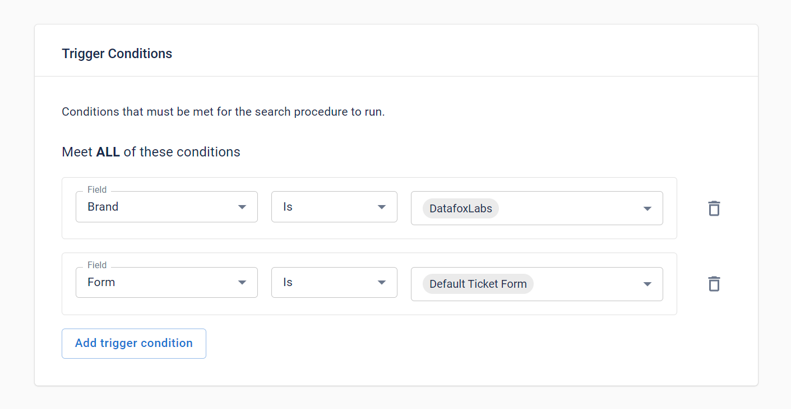

Optimize Zendesk ticket management with our Auto Merge Ticket App
Say goodbye to the headache of duplicate tickets! With our Auto Merge Ticket app, you can effortlessly merge similar tickets to streamline your workflow, reduce redundancy, and improve response times.
Here's how you can make the most of this powerful tool:
🚀 Quick Overview of Auto Merge Ticket
Our Auto Merge Ticket app helps merge duplicate tickets automatically based on custom rules, so your team can focus on what matters: assisting customers. Set it to match tickets by key identifiers like Requester Name, Order ID, or Product ID for seamless ticket consolidation.

🎯 Setting Custom Trigger Conditions
Get the perfect balance of automation by setting trigger conditions that control when a merge should happen. Filter by ticket form, channel, brand, or priority to ensure only relevant tickets are merged, maximizing efficiency without losing control.

🚫 Excluding Tickets from Merging
Need to prevent certain tickets from merging? You can exclude tickets based on specific criteria like channels or unique custom field values, so essential cases stay separate. For instance, tickets from high-priority channels can bypass merging to ensure rapid attention.
By configuring Auto Merge Ticket app, you’ll transform your Zendesk experience. Not only will you cut down on clutter, but you’ll also improve response times and maintain a focused queue.
You have some feedback? Please feel free to reach us via email at help.datafox@gmail.com.